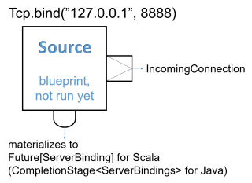

Working with streaming IO
Dependency
To use Akka Streams, add the module to your project:
- sbt
libraryDependencies += "com.typesafe.akka" %% "akka-stream" % "2.5-SNAPSHOT"- Maven
<dependency> <groupId>com.typesafe.akka</groupId> <artifactId>akka-stream_2.12</artifactId> <version>2.5-SNAPSHOT</version> </dependency>- Gradle
dependencies { compile group: 'com.typesafe.akka', name: 'akka-stream_2.12', version: '2.5-SNAPSHOT' }
Introduction
Akka Streams provides a way of handling File IO and TCP connections with Streams. While the general approach is very similar to the Actor based TCP handling using Akka IO, by using Akka Streams you are freed of having to manually react to back-pressure signals, as the library does it transparently for you.
Streaming TCP
Accepting connections: Echo Server
In order to implement a simple EchoServer we bind to a given address, which returns a Source[IncomingConnection, Future[ServerBinding]]Source<IncomingConnection, CompletionStage<ServerBinding>>, which will emit an IncomingConnection element for each new connection that the Server should handle:
- Scala
-
val binding: Future[ServerBinding] = Tcp().bind("127.0.0.1", 8888).to(Sink.ignore).run() binding.map { b ⇒ b.unbind() onComplete { case _ ⇒ // ... } } - Java
-
// IncomingConnection and ServerBinding imported from Tcp final Source<IncomingConnection, CompletionStage<ServerBinding>> connections = Tcp.get(system).bind("127.0.0.1", 8888);

Next, we handle each incoming connection using a Flow which will be used as the operator to handle and emit ByteString s from and to the TCP Socket. Since one ByteString does not have to necessarily correspond to exactly one line of text (the client might be sending the line in chunks) we use the Framing.delimiterdelimiter helper Flow from akka.stream.javadsl.Framing to chunk the inputs up into actual lines of text. The last boolean argument indicates that we require an explicit line ending even for the last message before the connection is closed. In this example we add exclamation marks to each incoming text message and push it through the flow:
- Scala
-
import akka.stream.scaladsl.Framing val connections: Source[IncomingConnection, Future[ServerBinding]] = Tcp().bind(host, port) connections runForeach { connection ⇒ println(s"New connection from: ${connection.remoteAddress}") val echo = Flow[ByteString] .via(Framing.delimiter( ByteString("\n"), maximumFrameLength = 256, allowTruncation = true)) .map(_.utf8String) .map(_ + "!!!\n") .map(ByteString(_)) connection.handleWith(echo) } - Java
-
connections.runForeach( connection -> { System.out.println("New connection from: " + connection.remoteAddress()); final Flow<ByteString, ByteString, NotUsed> echo = Flow.of(ByteString.class) .via( Framing.delimiter( ByteString.fromString("\n"), 256, FramingTruncation.DISALLOW)) .map(ByteString::utf8String) .map(s -> s + "!!!\n") .map(ByteString::fromString); connection.handleWith(echo, mat); }, mat);

Notice that while most building blocks in Akka Streams are reusable and freely shareable, this is not the case for the incoming connection Flow, since it directly corresponds to an existing, already accepted connection its handling can only ever be materialized once.
Closing connections is possible by cancelling the incoming connection Flow from your server logic (e.g. by connecting its downstream to a Sink.cancelledSink.cancelled() and its upstream to a Source.emptySource.empty()). It is also possible to shut down the server’s socket by cancelling the IncomingConnection source connections.
We can then test the TCP server by sending data to the TCP Socket using netcat:
$ echo -n "Hello World" | netcat 127.0.0.1 8888
Hello World!!!
Connecting: REPL Client
In this example we implement a rather naive Read Evaluate Print Loop client over TCP. Let’s say we know a server has exposed a simple command line interface over TCP, and would like to interact with it using Akka Streams over TCP. To open an outgoing connection socket we use the outgoingConnection method:
- Scala
-
val connection = Tcp().outgoingConnection("127.0.0.1", 8888) val replParser = Flow[String].takeWhile(_ != "q") .concat(Source.single("BYE")) .map(elem ⇒ ByteString(s"$elem\n")) val repl = Flow[ByteString] .via(Framing.delimiter( ByteString("\n"), maximumFrameLength = 256, allowTruncation = true)) .map(_.utf8String) .map(text ⇒ println("Server: " + text)) .map(_ ⇒ readLine("> ")) .via(replParser) val connected = connection.join(repl).run() - Java
-
final Flow<ByteString, ByteString, CompletionStage<OutgoingConnection>> connection = Tcp.get(system).outgoingConnection("127.0.0.1", 8888); final Flow<String, ByteString, NotUsed> replParser = Flow.<String>create() .takeWhile(elem -> !elem.equals("q")) .concat(Source.single("BYE")) // will run after the original flow completes .map(elem -> ByteString.fromString(elem + "\n")); final Flow<ByteString, ByteString, NotUsed> repl = Flow.of(ByteString.class) .via(Framing.delimiter(ByteString.fromString("\n"), 256, FramingTruncation.DISALLOW)) .map(ByteString::utf8String) .map( text -> { System.out.println("Server: " + text); return "next"; }) .map(elem -> readLine("> ")) .via(replParser); CompletionStage<OutgoingConnection> connectionCS = connection.join(repl).run(mat);
The repl flow we use to handle the server interaction first prints the servers response, then awaits on input from the command line (this blocking call is used here for the sake of simplicity) and converts it to a ByteString which is then sent over the wire to the server. Then we connect the TCP pipeline to this operator–at this point it will be materialized and start processing data once the server responds with an initial message.
A resilient REPL client would be more sophisticated than this, for example it should split out the input reading into a separate mapAsync step and have a way to let the server write more data than one ByteString chunk at any given time, these improvements however are left as exercise for the reader.
Avoiding deadlocks and liveness issues in back-pressured cycles
When writing such end-to-end back-pressured systems you may sometimes end up in a situation of a loop, in which either side is waiting for the other one to start the conversation. One does not need to look far to find examples of such back-pressure loops. In the two examples shown previously, we always assumed that the side we are connecting to would start the conversation, which effectively means both sides are back-pressured and can not get the conversation started. There are multiple ways of dealing with this which are explained in depth in Graph cycles, liveness and deadlocks, however in client-server scenarios it is often the simplest to make either side send an initial message.
In case of back-pressured cycles (which can occur even between different systems) sometimes you have to decide which of the sides has start the conversation in order to kick it off. This can be often done by injecting an initial message from one of the sides–a conversation starter.
To break this back-pressure cycle we need to inject some initial message, a “conversation starter”. First, we need to decide which side of the connection should remain passive and which active. Thankfully in most situations finding the right spot to start the conversation is rather simple, as it often is inherent to the protocol we are trying to implement using Streams. In chat-like applications, which our examples resemble, it makes sense to make the Server initiate the conversation by emitting a “hello” message:
- Scala
-
connections.to(Sink.foreach { connection ⇒ // server logic, parses incoming commands val commandParser = Flow[String].takeWhile(_ != "BYE").map(_ + "!") import connection._ val welcomeMsg = s"Welcome to: $localAddress, you are: $remoteAddress!" val welcome = Source.single(welcomeMsg) val serverLogic = Flow[ByteString] .via(Framing.delimiter( ByteString("\n"), maximumFrameLength = 256, allowTruncation = true)) .map(_.utf8String) .via(commandParser) // merge in the initial banner after parser .merge(welcome) .map(_ + "\n") .map(ByteString(_)) connection.handleWith(serverLogic) }).run() - Java
-
connections .to( Sink.foreach( (IncomingConnection connection) -> { // server logic, parses incoming commands final Flow<String, String, NotUsed> commandParser = Flow.<String>create() .takeWhile(elem -> !elem.equals("BYE")) .map(elem -> elem + "!"); final String welcomeMsg = "Welcome to: " + connection.localAddress() + " you are: " + connection.remoteAddress() + "!"; final Source<String, NotUsed> welcome = Source.single(welcomeMsg); final Flow<ByteString, ByteString, NotUsed> serverLogic = Flow.of(ByteString.class) .via( Framing.delimiter( ByteString.fromString("\n"), 256, FramingTruncation.DISALLOW)) .map(ByteString::utf8String) .via(commandParser) .merge(welcome) .map(s -> s + "\n") .map(ByteString::fromString); connection.handleWith(serverLogic, mat); })) .run(mat);
To emit the initial message we merge a Source with a single element, after the command processing but before the framing and transformation to ByteString s this way we do not have to repeat such logic.
In this example both client and server may need to close the stream based on a parsed command - BYE in the case of the server, and q in the case of the client. This is implemented by taking from the stream until q and and concatenating a Source with a single BYE element which will then be sent after the original source completedusing a custom operator extending GraphStage which completes the stream once it encounters such command.
Using framing in your protocol
Streaming transport protocols like TCP only pass streams of bytes, and does not know what is a logical chunk of bytes from the application’s point of view. Often when implementing network protocols you will want to introduce your own framing. This can be done in two ways: An end-of-frame marker, e.g. end line \n, can do framing via Framing.delimiter. Or a length-field can be used to build a framing protocol. There is a bidi implementing this protocol provided by Framing.simpleFramingProtocol, see ScalaDoc Javadoc for more information.
JsonFramingJsonFraming separates valid JSON objects from incoming ByteString objects:
- Scala
-
val input = """ |[ | { "name" : "john" }, | { "name" : "Ég get etið gler án þess að meiða mig" }, | { "name" : "jack" }, |] |""".stripMargin // also should complete once notices end of array val result = Source.single(ByteString(input)) .via(JsonFraming.objectScanner(Int.MaxValue)) .runFold(Seq.empty[String]) { case (acc, entry) ⇒ acc ++ Seq(entry.utf8String) } - Java
-
String input = "[{ \"name\" : \"john\" }, { \"name\" : \"Ég get etið gler án þess að meiða mig\" }, { \"name\" : \"jack\" }]"; CompletionStage<ArrayList<String>> result = Source.single(ByteString.fromString(input)) .via(JsonFraming.objectScanner(Integer.MAX_VALUE)) .runFold( new ArrayList<String>(), (acc, entry) -> { acc.add(entry.utf8String()); return acc; }, materializer);
TLS
Similar factories as shown above for raw TCP but where the data is encrypted using TLS are available from Tcp through outgoingTlsConnection, bindTls and bindAndHandleTls, see the Tcp ScaladocTcp Javadoc for details.
Using TLS requires a keystore and a truststore and then a somewhat involved dance of configuring the SSLContext and the details for how the session should be negotiated:
- Scala
-
import akka.stream.TLSClientAuth import akka.stream.TLSProtocol import com.typesafe.sslconfig.akka.AkkaSSLConfig import java.security.KeyStore import javax.net.ssl._ val sslConfig = AkkaSSLConfig() // Don't hardcode your password in actual code val password = "abcdef".toCharArray // trust store and keys in one keystore val keyStore = KeyStore.getInstance("PKCS12") keyStore.load(classOf[TcpSpec].getResourceAsStream("/tcp-spec-keystore.p12"), password) val tmf = TrustManagerFactory.getInstance("SunX509") tmf.init(keyStore) val keyManagerFactory = KeyManagerFactory.getInstance("SunX509") keyManagerFactory.init(keyStore, password) // initial ssl context val sslContext = SSLContext.getInstance("TLS") sslContext.init(keyManagerFactory.getKeyManagers, tmf.getTrustManagers, new SecureRandom) // protocols val defaultParams = sslContext.getDefaultSSLParameters val defaultProtocols = defaultParams.getProtocols val protocols = sslConfig.configureProtocols(defaultProtocols, sslConfig.config) defaultParams.setProtocols(protocols) // ciphers val defaultCiphers = defaultParams.getCipherSuites val cipherSuites = sslConfig.configureCipherSuites(defaultCiphers, sslConfig.config) defaultParams.setCipherSuites(cipherSuites) val negotiateNewSession = TLSProtocol.NegotiateNewSession .withCipherSuites(cipherSuites: _*) .withProtocols(protocols: _*) .withParameters(defaultParams) .withClientAuth(TLSClientAuth.None) - Java
-
// imports import akka.stream.TLSClientAuth; import akka.stream.TLSProtocol; import com.typesafe.sslconfig.akka.AkkaSSLConfig; import java.security.KeyStore; import javax.net.ssl.*; import java.security.SecureRandom; // -- setup logic --- AkkaSSLConfig sslConfig = AkkaSSLConfig.get(system); // Don't hardcode your password in actual code char[] password = "abcdef".toCharArray(); // trust store and keys in one keystore KeyStore keyStore = KeyStore.getInstance("PKCS12"); keyStore.load(getClass().getResourceAsStream("/tcp-spec-keystore.p12"), password); TrustManagerFactory tmf = TrustManagerFactory.getInstance("SunX509"); tmf.init(keyStore); KeyManagerFactory keyManagerFactory = KeyManagerFactory.getInstance("SunX509"); keyManagerFactory.init(keyStore, password); // initial ssl context SSLContext sslContext = SSLContext.getInstance("TLS"); sslContext.init(keyManagerFactory.getKeyManagers(), tmf.getTrustManagers(), new SecureRandom()); // protocols SSLParameters defaultParams = sslContext.getDefaultSSLParameters(); String[] defaultProtocols = defaultParams.getProtocols(); String[] protocols = sslConfig.configureProtocols(defaultProtocols, sslConfig.config()); defaultParams.setProtocols(protocols); // ciphers String[] defaultCiphers = defaultParams.getCipherSuites(); String[] cipherSuites = sslConfig.configureCipherSuites(defaultCiphers, sslConfig.config()); defaultParams.setCipherSuites(cipherSuites); TLSProtocol.NegotiateNewSession negotiateNewSession = TLSProtocol.negotiateNewSession() .withCipherSuites(cipherSuites) .withProtocols(protocols) .withParameters(defaultParams) .withClientAuth(TLSClientAuth.none());
The SslContext and NegotiateFirstSession instances can then be used with the binding or outgoing connection factory methods.
Streaming File IO
Akka Streams provide simple Sources and Sinks that can work with ByteString instances to perform IO operations on files.
Streaming data from a file is as easy as creating a FileIO.fromPath given a target path, and an optional chunkSize which determines the buffer size determined as one “element” in such stream:
- Scala
-
import akka.stream.scaladsl._ val file = Paths.get("example.csv") val foreach: Future[IOResult] = FileIO.fromPath(file) .to(Sink.ignore) .run() - Java
-
final Path file = Paths.get("example.csv"); Sink<ByteString, CompletionStage<Done>> printlnSink = Sink.<ByteString>foreach(chunk -> System.out.println(chunk.utf8String())); CompletionStage<IOResult> ioResult = FileIO.fromPath(file).to(printlnSink).run(mat);
Please note that these operators are backed by Actors and by default are configured to run on a pre-configured threadpool-backed dispatcher dedicated for File IO. This is very important as it isolates the blocking file IO operations from the rest of the ActorSystem allowing each dispatcher to be utilised in the most efficient way. If you want to configure a custom dispatcher for file IO operations globally, you can do so by changing the akka.stream.materializer.blocking-io-dispatcher, or for a specific operator by specifying a custom Dispatcher in code, like this: